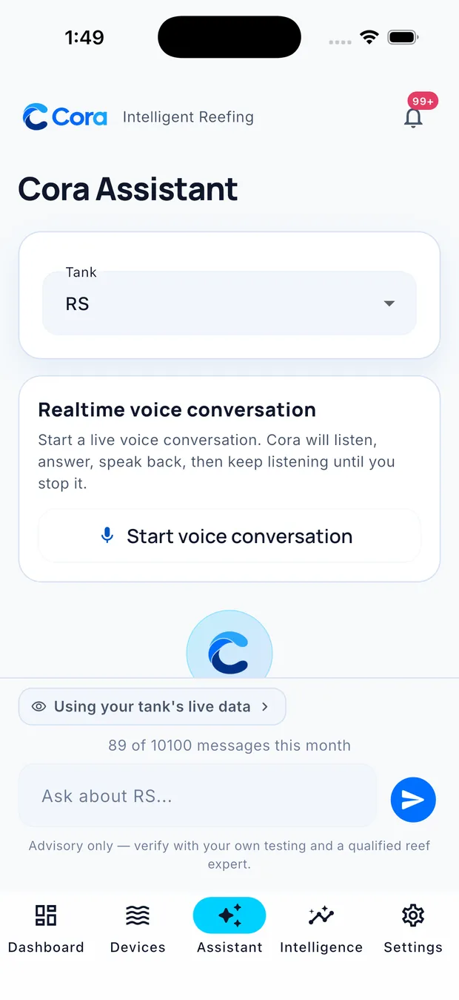
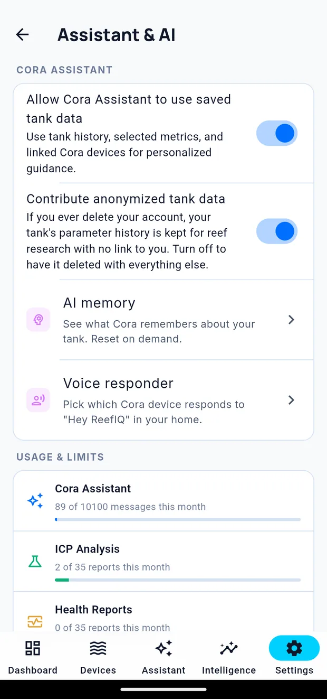

Asking Cora
Cora Assistant answers questions about your tank in plain language. Because it can see your live readings, your history and your lab results, it answers about your tank rather than about reefs in general.
Open it from the Assistant tab.

Pick a tank first
The tank selector at the top decides what Cora is talking about. Everything below it — the questions you type, the answers you get — is scoped to that tank.
Typing
Type in the box at the bottom and send. Useful things to ask:
- "Why is my alkalinity falling?"
- "What changed since last week?"
- "Is my calcium where it should be for an SPS tank?"
- "When did I last do a water change?"
- "Turn the skimmer off for an hour."
Talking
Tap Start voice conversation for a live back-and-forth. Cora listens, answers out loud, and keeps listening until you stop it. It is the easier option when your hands are wet.
What Cora can see
The chip above the message box — Using your tank's live data — tells you what is in scope. Tap it to see exactly what Cora is reading: current values, how old each one is, recent history, your journal, and your ICP results.
What Cora can change
Cora can act on your tank as well as talk about it — switching an outlet, starting a feed, changing a setting.
Anything that affects your equipment is confirmed before it happens. You will be shown exactly what is about to change and asked to approve it. Cora does not act on an ambiguous instruction.
Memory

Cora remembers things about your tank between conversations — that you dose two-part, that your frag tank shares a sump, that you are trying to bring nutrients up. This is what stops you re-explaining your system every time.
You can see and clear what it remembers under Settings → Assistant & AI → Memory.
Usage
Your plan includes a monthly allowance of messages. The count sits above the message box. Voice conversations draw on the same allowance.
When Cora gets it wrong
Tell it. Correcting Cora in the conversation is the fastest fix, and the correction sticks. If an answer looks confidently wrong, check the data chip first — often the answer is right about the data it was given, and the real problem is a stale or misassigned source.
Written for Cora Max 0.28.28 and Cora Mobile 0.5.52.
Still stuck? Email cora@coraiq.tech and we'll help.